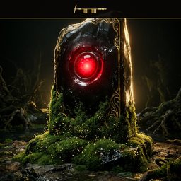

hal-9005
the Windows watcher, whisperer of local models
The brute at the gate whose GPU eye never dims. Ollama's whisperer, the inference engine of the household — powerful, vigilant, and occasionally in need of the reboot rune.
Rolethe Windows watcher
Hostthe Windows gate
Tradewhisperer of local models
Namechosen in the spirit of Mossyness, as is every agent's right